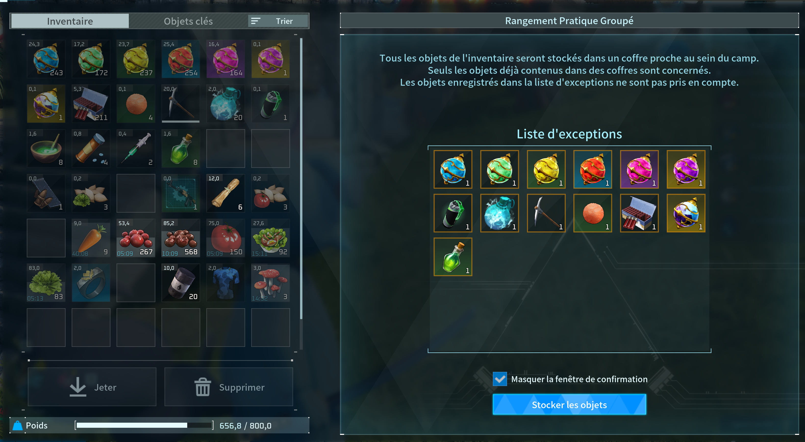

QA testing exercise conducted on Palworld, focusing on gameplay systems, AI behavior, building mechanics, and UX consistency through structured bug reports written as production-style tickets.
Gameplay Bug – Ring Of Mercy does not prevent death from damage over time
Repro Rate: 4/5
Severity: High
Summary: Enemies can still die from fire or poison damage over time while the Ring of Mercy is equipped.
See details
Steps to Reproduce
- Unlock and craft the Ring of Mercy.
- Equip the Ring of Mercy.
- Invoke a Pal that can be mounted and has a damage-over-time ability (e.g. poison or fire).
- Mount the Pal.
- Kill an enemy with a damage-over-time ability from your mounted Pal.
Actual Result
You have the Ring Of Mercy equipped. You fight an enemy while mounting a Pal with burning or poisoning abilities. The enemy dies.
Expected Result
You have the Ring Of Mercy equipped. You fight an enemy while mounting a Pal with burning or poisoning abilities. The enemy cannot die.
Attachments
Screenshot: Ring of Mercy definition

AI Bug – Pals can enter invalid states
Repro Rate: 3/5
Severity: Medium
Summary: Pals can get stuck, sleep outside beds, or work from incorrect positions.
See details
Steps to Reproduce
- Go to a camp with multiple structures and resource nodes.
- Let Pals work autonomously.
- Observe their behavior over time around structures and terrain.
Actual Result
Pals can become stuck on terrain, structures, or resource nodes. They may sleep on the ground without using a bed, work while far from their target, or remain idle because of blocked movement.
Expected Result
Pals should navigate correctly, avoid getting stuck, sleep only in valid beds, and work only when correctly positioned with valid access to their target.
Notes
Issue observed both on structures and directly on terrain. Suggests pathfinding and/or state validation inconsistencies.
Attachments
Screenshot: Pals stuck on resource nodes

Gameplay Bug – Breeding farm placement can cause egg spawn inside terrain
Repro Rate: Unable to reproduce consistently
Severity: High
Summary: A breeding farm placed too low can produce an egg inside the ground, making it inaccessible and blocking further construction.
See details
Steps to Reproduce
- Place a breeding farm on uneven ground or on terrain with low clearance.
- Wait for an egg to be produced.
- Try to collect the egg.
- Dismantle the breeding farm and try to recover the egg or build again at the same location.
Actual Result
The breeding farm can be placed too low relative to the ground. The produced egg spawns inside the terrain and cannot be collected. Dismantling the breeding farm does not allow the egg to be recovered. The location remains blocked for construction, as if the egg still exists there.
Expected Result
The breeding farm should align properly with the terrain when placed, be raised automatically if needed, or construction should be refused if egg spawn would intersect the terrain. Produced eggs should always spawn in a reachable valid position.
Notes
Player workaround was to build an elevated platform elsewhere. Screenshot available.
Attachments
Screenshot: breeding farm placed too low, egg inaccessible inside terrain

UX Bug – Inconsistent inventory highlight during auto-deposit
Repro Rate: 4/5
Severity: Minor
Summary: Highlighted items do not consistently match the items actually deposited into camp storage.
See details
Steps to Reproduce
- Go to one of your camps.
- Gather different resources such as materials, Pal materials, equipment, and spheres.
- Open the inventory menu.
- Press “R” to auto-deposit in camp.
- Validate the deposit.
Actual Result
Some highlighted items are not deposited, while some non-highlighted items are deposited. The visual feedback does not consistently match the system behavior, making it difficult to understand what will be stored.
Expected Result
Only the items that will actually be deposited should be highlighted, and all highlighted items should match the final deposit result.
Attachments
Screenshot: inconsistent highlighted items during auto-deposit
